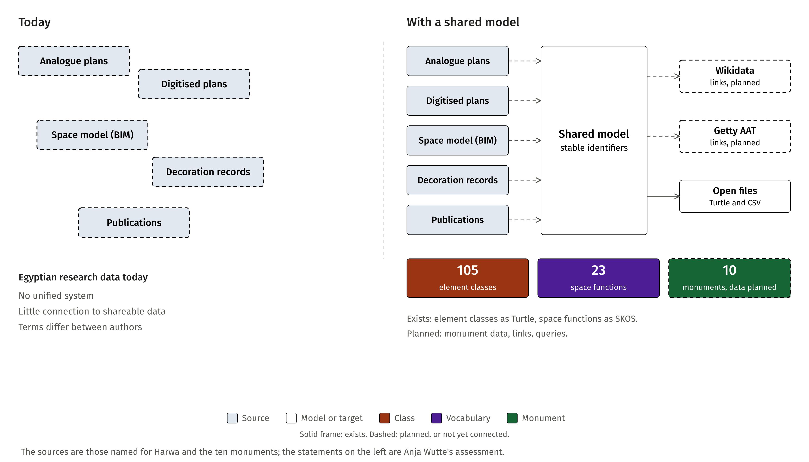
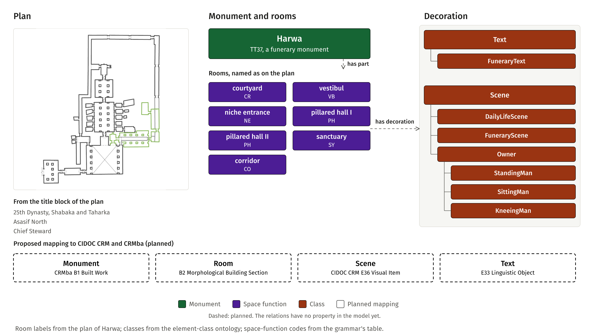
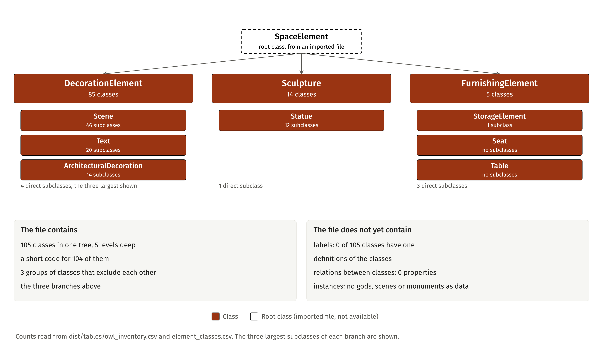
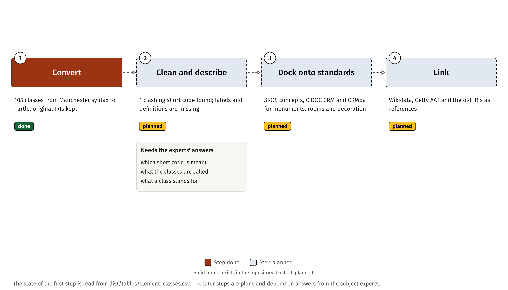
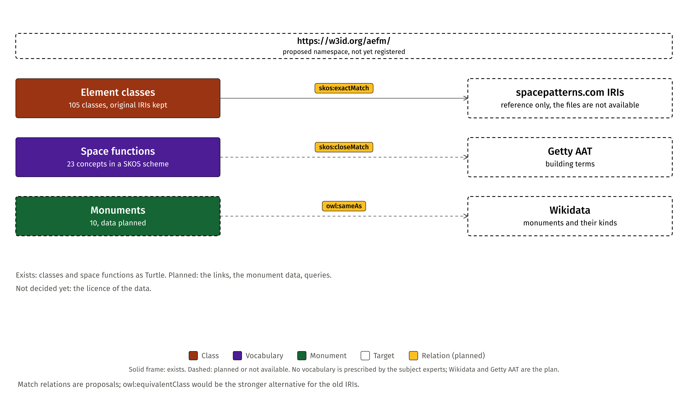
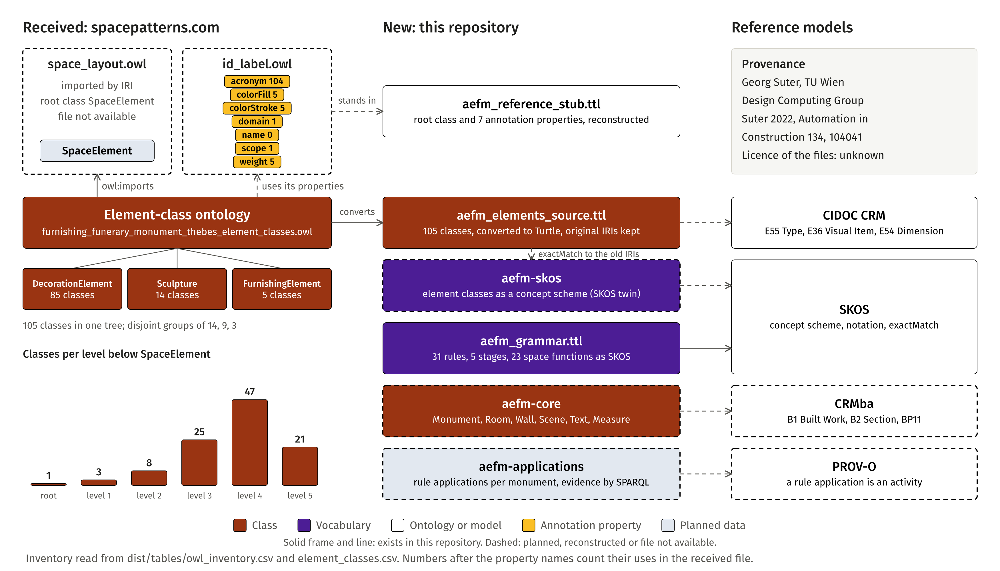
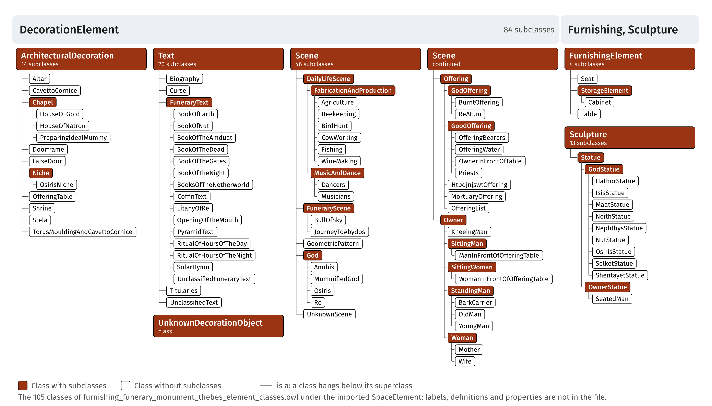
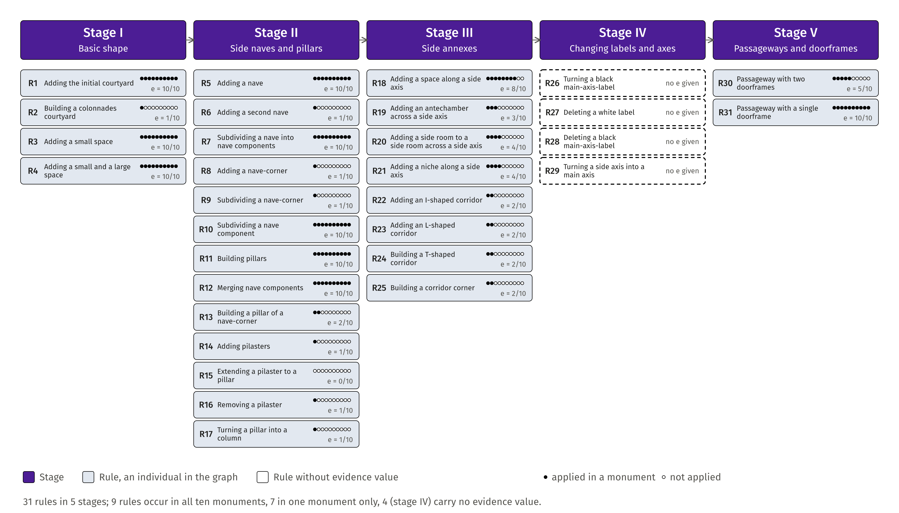
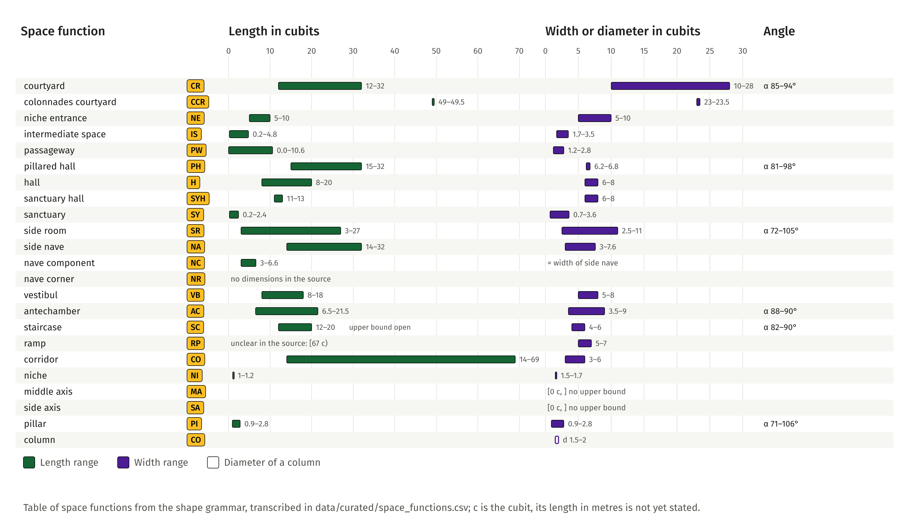

Slide figures
Figures for the semantic-modelling part of the CHNT31 contribution. Every number and label is read from the repository's tables. Dashed frames in the figures mark what is planned or not available.
1The six slides

V02Research data on funerary monuments today, and with a shared model.
Figure CC BY 4.0. Numbers read from dist/tables/owl_inventory.csv and data/curated/grammar_rules.csv. The statements on the left are Anja Wutte's assessment of the field.



V01From a monument to its rooms and decoration, shown for Harwa.
Figure CC BY 4.0. Numbers read from dist/tables/element_classes.csv and data/curated/space_functions.csv. Room labels from the plan of Harwa (TT37), plan of Harwa digitised by Anja Wutte after Eigner (1984); green marks later additions.



V08What the received ontology contains, and what it does not yet contain.
Figure CC BY 4.0. Numbers read from dist/tables/owl_inventory.csv and element_classes.csv; the ontology is as received from Anja Wutte.



V09Four steps from the received ontology to linked data.
Figure CC BY 4.0. Numbers read from dist/tables/element_classes.csv. The steps after the first are plans.



V05How the model's identifiers are meant to link to other sources.
Figure CC BY 4.0. Numbers read from dist/tables/owl_inventory.csv and data/curated/space_functions.csv. Match relations and targets are planned.



V03The received ontology and how the new modules dock onto it.
Figure CC BY 4.0. Numbers read from dist/tables/owl_inventory.csv and element_classes.csv. The ontologies space_layout.owl and id_label.owl are by Georg Suter (TU Wien); licence not yet known.


2Backup: the ontology in detail

V04Element classes: 105 classes, one tree.
Figure CC BY 4.0. Numbers read from dist/tables/element_classes.csv, converted from the element-class ontology as received.


3Shape grammar (second contribution)

V06Shape grammar: 31 rules in five stages, with evidence.
Figure CC BY 4.0. Numbers read from data/curated/grammar_rules.csv, transcribed from the shape grammar of Wutte and Duarte (2021).



V07Space functions with dimension ranges in cubits.
Figure CC BY 4.0. Numbers read from data/curated/space_functions.csv; c is the cubit (0.5 m).